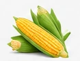
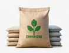
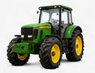
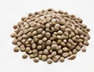
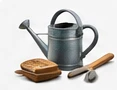

EXPLORE THE MARKETPLACE
Everything for your shamba.
Choose a category to discover what is available and what to check before buying.

Crops
Explore vegetables, grains and other harvests from Kenyan farms. Compare the unit price, harvest timing and collection location before arranging a purchase.
Explore category →Livestock
Browse livestock and discuss breed, age, health history and viewing arrangements with the seller. Inspect the animal and agree on transport before committing to a purchase.
Explore category →
Farm Inputs
Find supplies for crop production. Check the product name, packaging, quantity and suitability for your farm before buying.
Explore category →
Farm Equipment
Explore tractors and agricultural machinery. Ask about condition, maintenance history, included attachments and opportunities to inspect equipment.
Explore category →Seeds
Browse planting materials and seedlings. Confirm the variety, quantity, growing conditions and collection arrangements with the supplier.
Explore category →
Fertiliser
Find fertiliser listings and compare pack sizes. Choose products based on your soil and crop needs, and check the original label and handling instructions.
Explore category →
Tools & Supplies
Discover practical tools and supplies for everyday farm work. Check sizes, materials, condition and quantities before arranging collection.
Explore category →Land & Property
Explore space for agricultural activity. View the property and independently verify ownership, permitted use, boundaries and the terms of any proposed agreement.
Explore category →Services
Find help with agricultural work, transport and equipment services. Agree on the scope, timing, location and total price before work begins.
Explore category →